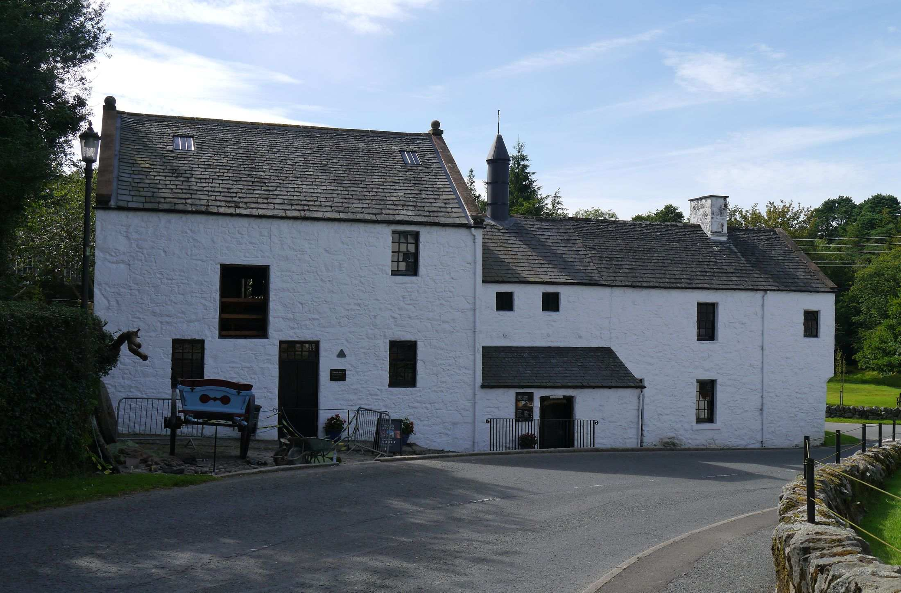
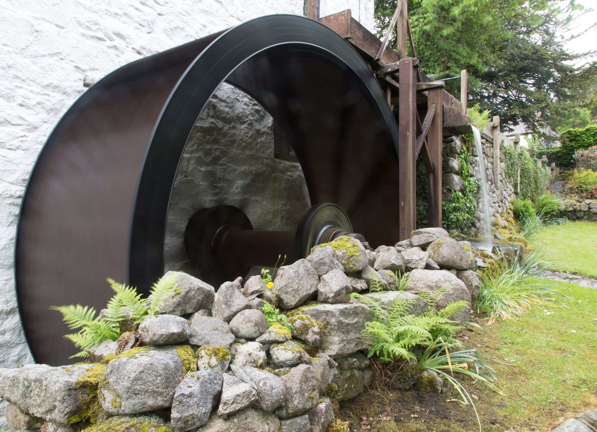
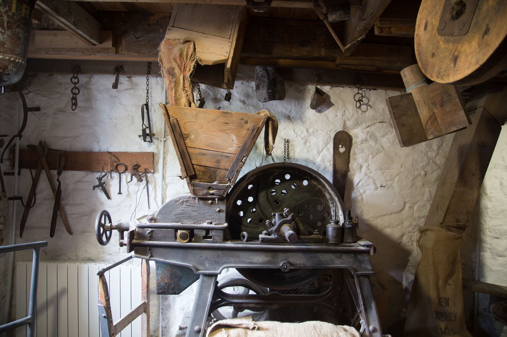
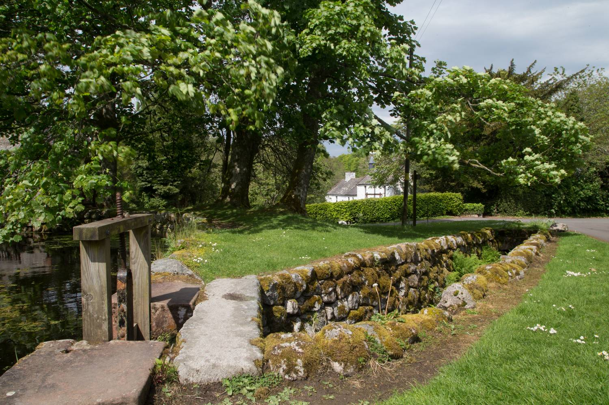

Sampled from the harled walls, pulled off yellow so it is chalk rather than cream.
Continuous with the daylight in every frame.

The mill from the road. Three floors and the kiln.

The wheel. Overshot, 3.4 m.

The millwright's wall.The pond.

The lade.
Four rooms in a working meal mill
The wheel is overshot and eleven feet across; when the sluice is up it drives two
pairs of stones and the whole building moves slightly.
G2 — wet slate #1b2023
The roof and the lade in shade. Makes each frame glow, at the cost of arguing that
this is an evening place.
The mill from the road. Three floors and the kiln.The wheel. Overshot, 3.4 m.The millwright's wall.The pond.The lade.
Four rooms in a working meal mill
The wheel is overshot and eleven feet across; when the sluice is up it drives two
pairs of stones and the whole building moves slightly.
G3 — dark timber #1a1612
The tarred wood of the wheel and the launder. Warmer than G2 and closer to the
interiors, but it fights the exteriors, which are all white wall and sky.
The mill from the road. Three floors and the kiln.The wheel. Overshot, 3.4 m.The millwright's wall.The pond.The lade.
Four rooms in a working meal mill
The wheel is overshot and eleven feet across; when the sluice is up it drives two
pairs of stones and the whole building moves slightly.